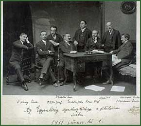

|  | |||
| The picture was taken on the 30th anniversary of the founding of Egyenlőség, the most important periodical of the Neolog Jews of Hungary. The periodical’s editors and contributors: Lajos Szabolcsi (1889–1943), Ernő Mezei (1851–1932), Sándor Komáromi (Samu Haber) (1866–1922), Sándor Mezey (1884–?), József Patai (1882–1953), Miksa Szabolcsi (1857–1915), Hugó Hazai (1867–1930), Sándor Fleischmann (1862–1916). | |||